Work experienceIBMProduct Design InternMay 2026 – Aug 2026COUNTRY FinancialUI/UX Design InternMay 2025 – Dec 2025HEBHigh School UI/UX Design InternJun 2024 – Aug 2024HEBHigh School UI/UX Design InternJun 2023 – Aug 2023
Outside the classroom
The communities I’ve grown with.
Psi Eta Mu · Information Sciences Professional Fraternity
PR Director
I was PR Director for Psi Eta Mu, the nation’s first and only Information Sciences and Data Sciences professional fraternity. Most of the work was getting students from different corners of the major into the same room.
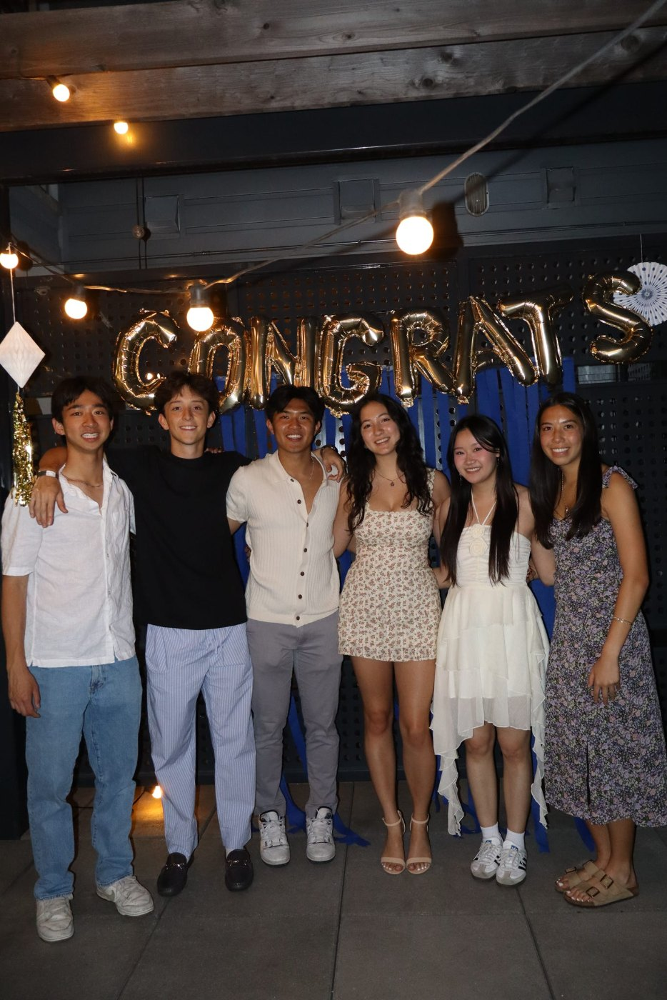
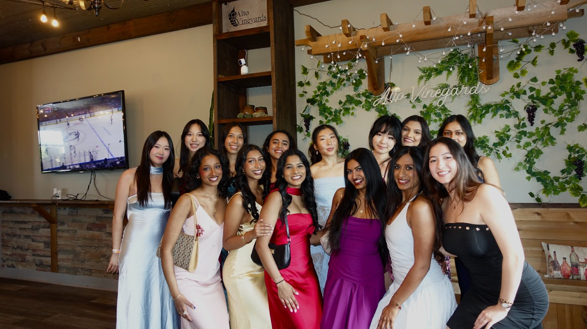
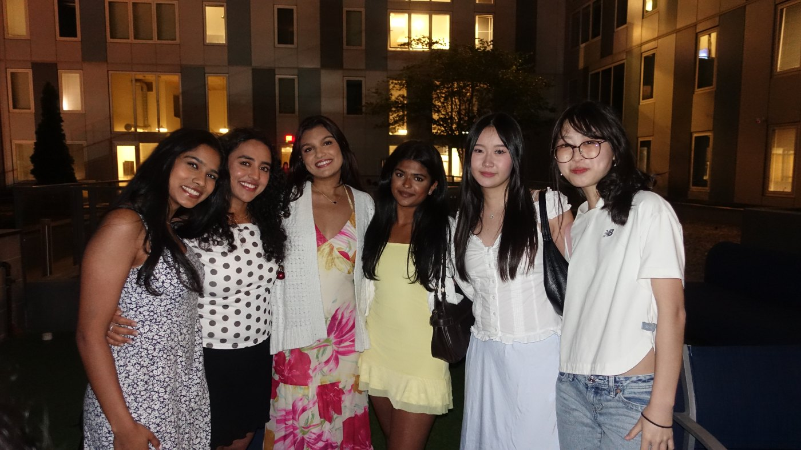
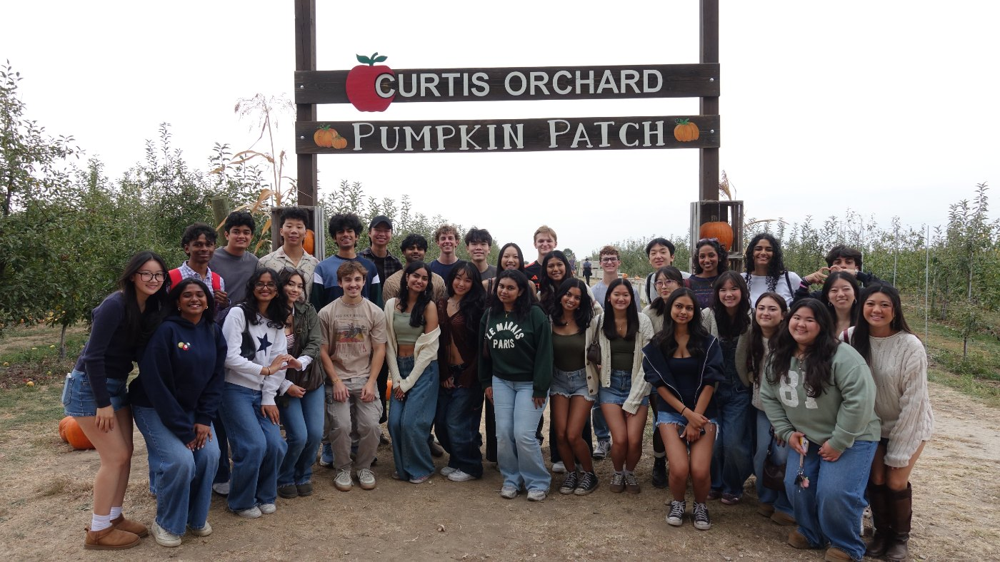
01 / 04
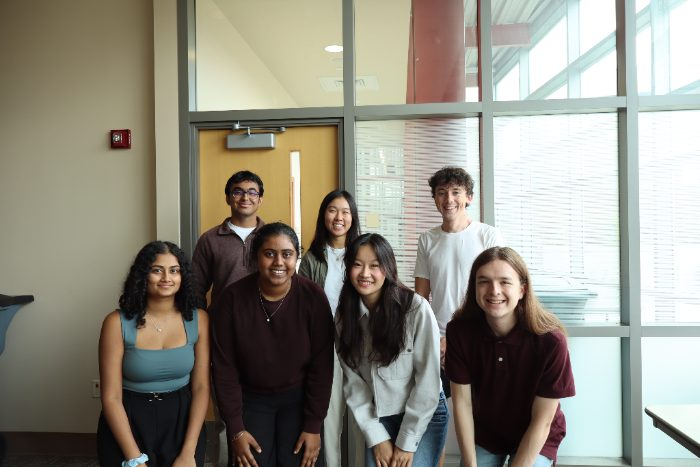
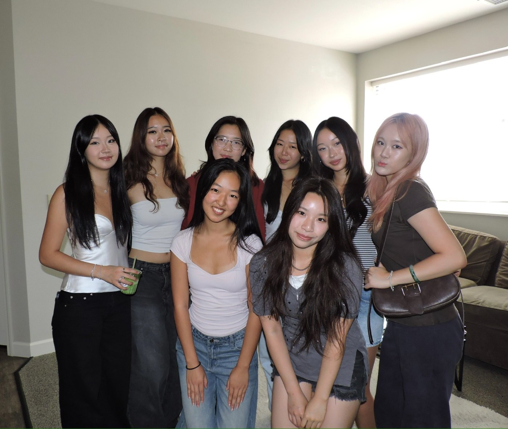
01 / 02
Hack4Impact · Technology for nonprofits
Product Designer → Product Manager
I started at Hack4Impact as a product designer and later became a product manager. We build software for nonprofits, so the job was turning how they already work into something a small team could ship.
How I think about design
Figuring out how things work, and how they could work better.
“For me, design is all about staying curious, trying something new, and hopefully making someone’s life a little easier in the process.”
I’m curious about how products actually get used. The work I like is where someone’s task, the software, and what the organization needs don’t line up yet.
Lately I’ve been getting out of Figma too: trying new tools, learning to build, and breaking things along the way.
Life outside Figma
When I’m not designing…
TravelingI got the chance to visit NYC IBM office this summer and this is the view from the building on the 28th floor!
Traveling
Coloring booksOver winter break this past year, I couldn't crochet at home, so I tried coloring! I'm not the best at art so it gave me more structure to practice art!
Coloring
BakingMy friends and I baked mini jellycat themed cakes! It's a goal of mine to try baking new pastries this year, like sourdough bread!
Baking
Blind boxesI love collecting mystery figurines and decorating my room with them! This was a unique blind box I found in LA with the cutest plush keychains!
Blind boxes
Trying new foodsMy favorite tart place! It's local to my university, and it's the first place I ever tried tarts. Genuinely the best ever!
Foods
Shrinky DinksI love making gifts for friends and this was also something I discovered this past winter break! Really easy, cheap and thoughtful gifts for my friends!
Shrinky Dinks
ConcertsThis is a picture from when I got to see Laufey in Chicago! The memories I make at concerts make the songs I got to hear live more meaningful!
During my Product Design internship at IBM, I worked on Terraform’s read-only experience for users who could review configurations but didn’t have permission to change them.
Removing the Edit button was the easy part. Across the product, that also removed context people needed to understand what was configured.
My contributionI owned the workflow audit, interaction design, concept exploration, and usability testing for this work. Research was a team effort; my part is noted in that section.
The problem
Read-only turned out to be more than removing the edit button.
Terraform’s role-based access control decides who can view a setting and who can change it. Making a setting read-only raised a harder question: what should stay visible once the controls are gone?
EditRead-only
ValueCurrent configurationSelected valueContextidepends on the value aboveEditingSaveCancelRemoved in read-only
EditableCurrent value + Context + Editing controlsRead-onlyCurrent value + Necessary context − Editing controls
Removing editing controls was straightforward. Deciding what information still helped someone understand the configuration was the harder part.
Full case study · Password protected
Go deeper into the work.
The full case study includes the 41-route audit, research findings, design explorations, Terraform-user testing, and the recommendations I handed off to the team.
Inside the full case study
0141-route audit
02Research findings
03Design explorations
04Terraform-user testing
05Combined direction
06Recommendations + handoff
Case study unlockedYou’re viewing the full project.
Anda helps drivers in Angola earn a living while working toward owning their vehicle. Their driver data was scattered across Odoo, spreadsheets, and GPS and Yango APIs.
Trustworthy driver data, and a score that can explain itself.
P1Once the data held up
Priority Queue and risk scoring for Customer Success Managers.
P2Deferred
Driver-facing app, rewards, and CSM messaging.
Timeline
Feb – May 2026
Role
Product Manager
Focus
Requirements
Roadmapping
Data model
Team
2 designers
Tech lead
Developers
Client
Anda, Angola
A look at what the team worked on throughout the semester.
Anda
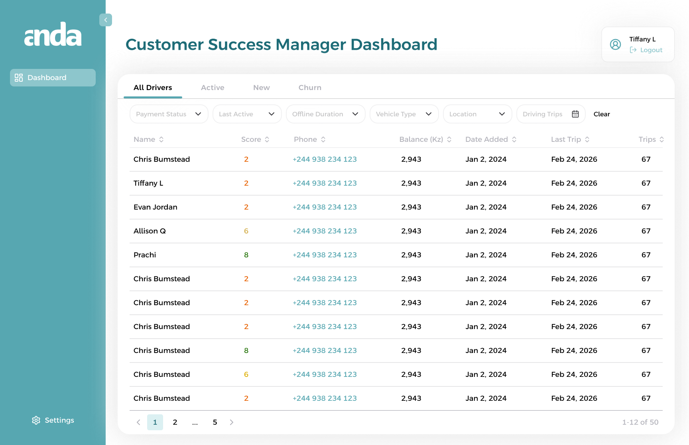
Anda
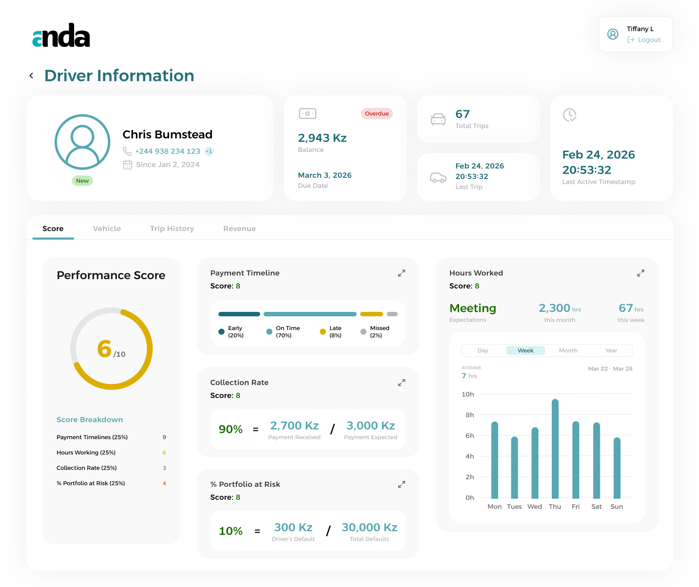
Anda
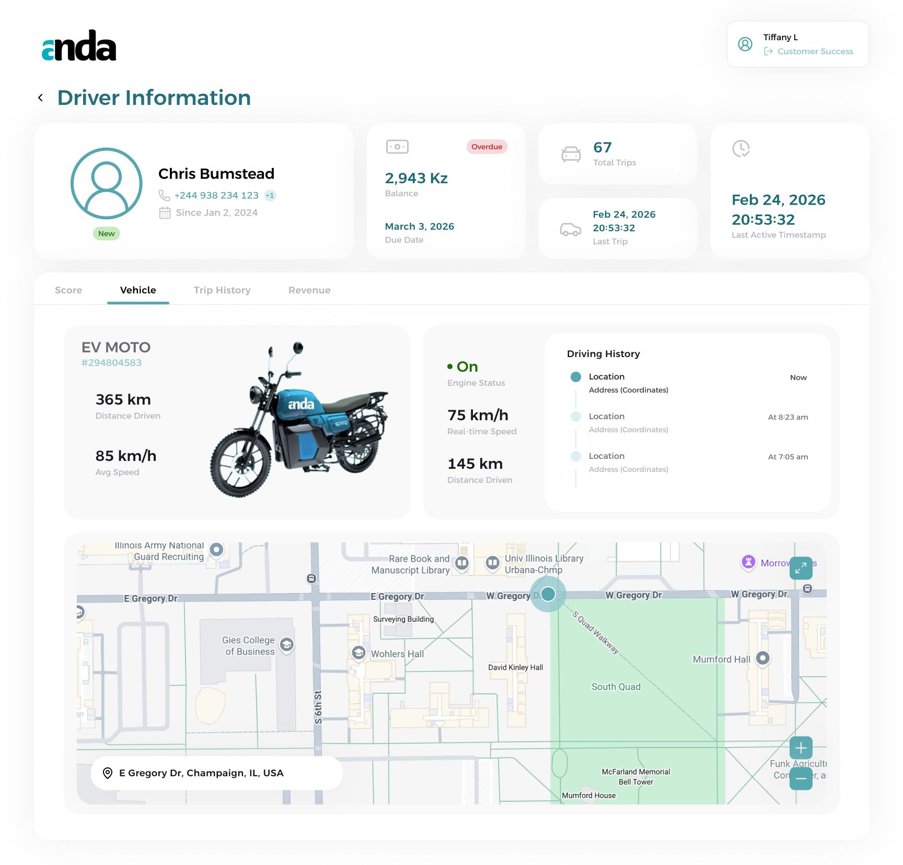
Anda
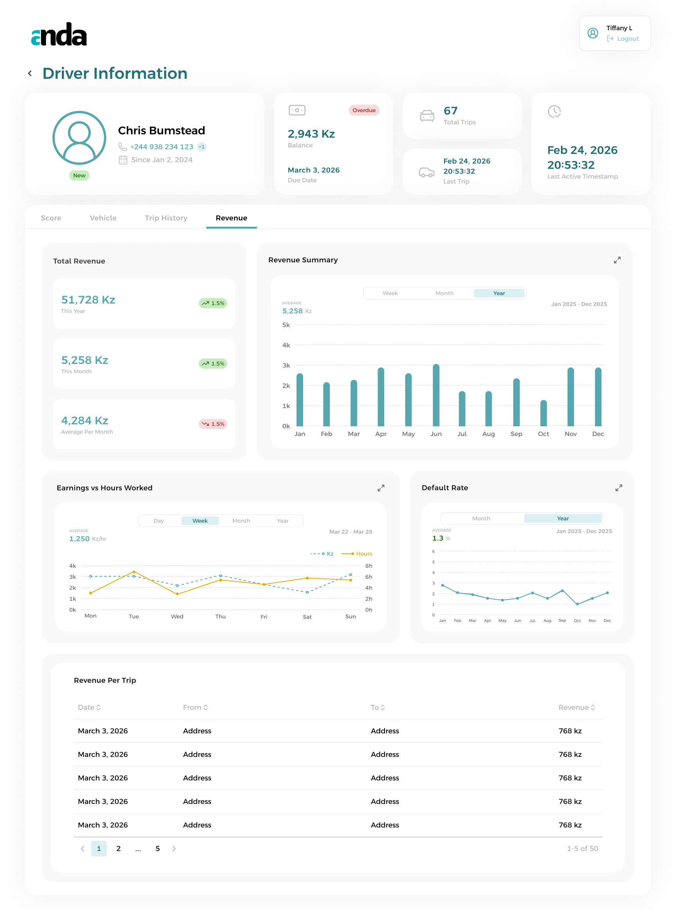
Anda
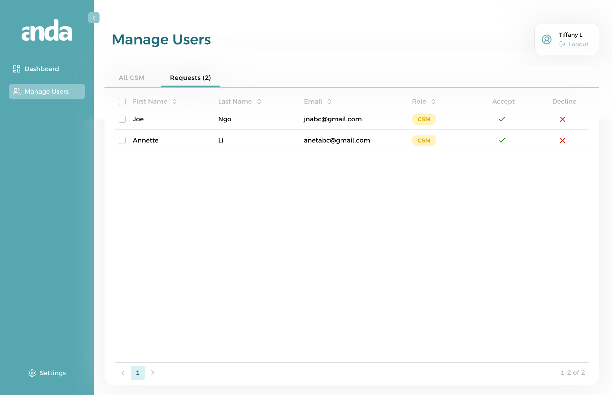
Product design: Tiffany Liu · Isabella Raffo
01The problem
No one could tell when a driver actually needed support.
Activity and payment data lived across Odoo, manual spreadsheets, and GPS and Yango APIs that didn't talk to each other. So a quiet driver could be underperforming, dealing with a broken bike, or unwilling to pay — and admins couldn't tell which.
01
Admins and CSMs had no easy way to see how a driver was doing — driving regularly, offline for stretches, keeping up with payments, or falling behind.
02
Checking on one driver meant opening several disconnected systems.
03
There was no clear way to decide which drivers needed help most urgently.
02Who we designed for
The Customer Success Managers who had to decide who needed help first.
Afonso NdaluCustomer Success Manager
“I don't want to guess whether someone's struggling or just having a bad week, I need to know before I reach out.”
What he needsA ranked view of his drivers built on real activity and payment signals, showing who needs help most urgently and why — with reasoning clear enough that he can repeat it back to a driver who asks.
RoleCustomer Success Manager
Systems he checksOdoo, GPS, Yango, spreadsheets
Decision he makesWho to check on first
What that meant for the roadmapTwo things had to be true before anything else: the activity and payment data had to be reliable, and a flagged driver had to come with a reason. That's why explainability went into P0 and the ranked Priority Queue into P1.
03My role
I was the Product Manager, so I wrote the requirements, set the priorities, and kept design and engineering working from the same list. Tiffany Liu and Isabella Raffo led the product design.
Product managementAllison Qiu
Product designTiffany LiuIsabella Raffo
EngineeringTech lead · developers
What I owned
RequirementsWrote the PRD and the requirements the designers and developers built from.
PrioritizationSet P0, P1, and P2, including what we chose not to build this semester.
Data modelWorked with the tech lead to define the activity and payment data the product needed.
Product decisionsMade the calls on explainability, on holding risk scoring, and on using synthetic data.
DependenciesTracked what we were waiting on and what the team could do meanwhile.
CoordinationKept design and engineering working from the same priorities week to week.
04The data problem
Before we could design the dashboards, we had to know which data we could rely on.
Driver activity and payment data came from four places. How reliable each one was, and when, set the order of the roadmap.
OdooSystem of recordWhere driver and payment records lived.
SpreadsheetsManualFilled in by hand, so gaps and errors were possible.
GPS APIActivityVehicle movement, speed, and engine status.
Yango APIActivityTrip and earnings activity from the ride-hailing side.
Why this set the order
The screens were only going to be useful if the activity and payment data behind them held up, so I worked with our tech lead on the data model before we scoped any views. The data and the performance logic came first.
05Roadmap
I wrote the PRD, then split the product into what we'd build first, next, and not yet.
I worked with our tech lead to define the data we needed, then set priorities around it. Each tier below has the reasoning, and the trade-off where we left something out.
P0Ship first
Authentication and the core Driver Performance Overview — nothing else mattered if admins couldn't trust the data.
If the platform flagged a driver, admins needed to see which activity or payment signals contributed. We treated explainability as a requirement from the start.
Admin and CSM dashboards focused on the same two things: real activity and payment status.
P1Once the data held up
The Priority Queue view and risk scoring, giving CSMs a clear read on who to check on first.
Trade-offHeld predictive risk scoring until the system could explain itself — flagging a driver without a reason wasn't good enough.
P2Deferred
Trade-offThe driver-facing mobile dashboard and rewards, since admins and CSMs needed visibility first.
Trade-offCSM messaging and CSM performance scoring, so CSMs had support tools before messaging tools.
06Decision — explainability as P0
Product question
What does someone need to see to understand a driver's score?
My decision
I put explainability in the P0 requirements, so an admin could see which activity and payment signals went into a driver's score.
Team output — designed by Tiffany Liu and Isabella Raffo
Anda
The breakdown shows the weight behind each factor: payment timeliness, hours worked, collection rate, portfolio risk.
Collection Rate and % Portfolio at Risk are shown as ratios, so an admin can check the math.
An admin can point to the reason a driver was flagged, which is what the requirements asked for.
07Decision — holding predictive scoring
Predictive scoring stayed in P1 until we could explain the results.
Anda
Designed by Tiffany Liu and Isabella Raffo
Why it was valuable
Risk scoring would give CSMs a clear read on who to check on first, instead of working through their drivers one by one.
Why it wasn't P0
I kept predictive scoring in P1 because we couldn't show a driver as high risk without being able to explain why.
08Decision — working with synthetic data
The dependency
Access to real driver data took longer than expected, and the timeline wasn't ours to set.
My decision
We used synthetic activity and payment patterns so design and development could keep moving while we waited.
What it didn't fix
Synthetic patterns kept design and development moving, but they didn't prove the scoring would work correctly with real drivers.
09The team's output
What the team built from those requirements.
Anda
Customer Success Manager dashboard
Traces back to
The Priority Queue I scoped as P1 — a ranked view of a CSM's drivers, with the score in the list so risk is visible before opening anyone.
Anda
Vehicle activity
Traces back to
The P0 requirement that inactivity carry context: whether a vehicle is moving, parked, or has been offline for a longer stretch.
Anda
Revenue and default rate
Traces back to
The payment half of the P0 data set, shown as trends rather than a single current balance.
10Outcome & reflection
This was my first time owning the product roadmap instead of contributing to one part of a project.
What the team got done
By the end of the semester the team had designed the P0 work — authentication, the driver performance overview with its score breakdown, and the admin and CSM dashboards — plus the P1 Priority Queue. The driver-facing app, rewards, and CSM messaging stayed out of scope on purpose. The interfaces were designed by Tiffany Liu and Isabella Raffo from the requirements I wrote.
What I learned
How much the product decisions depended on the data. The screens only worked if the data and the model behind them held up, so most of my time went into whether that part was on track. I also got more comfortable asking our tech lead questions until I actually understood what we were building, instead of nodding along.
Prioritizing meant deciding what we wouldn't build. Putting the core driver data first meant the driver-facing app and CSM messaging waited, and planning around data access I couldn't control is a big part of what I took from the semester.
What still needed validationSynthetic data kept design and development moving while access to real driver data was delayed, but it never showed that the scoring would behave correctly on real drivers. That was still open when the semester ended.
Making case information easier to find when time matters
Operation Safe Escape supports survivors of domestic violence, stalking, and harassment. I designed several flows for FLOW, a case management platform that replaced parts of their email and spreadsheet process.
OSE was managing hundreds of cases through email and spreadsheets.
For a small team, keeping up with that information took time away from supporting survivors.
01
OSE tracked survivor cases through email threads and spreadsheets while working with a small staff and volunteer team.
02
That made case history harder to follow and left the team without one consistent place to review what had already happened.
03
Admins and volunteers could spend time piecing together information before they could figure out what someone needed next.
Problem statement
OSE needed a secure way for admins and volunteers to understand a case quickly, keep its history in one place, and hand work off without losing context.
02Who we designed for
Robert GomezOSE volunteer
“I need to know in seconds what this person needs from me right now, not spend ten minutes piecing it together.”
What he needsTo open a case and understand how urgent it is, what the survivor needs, and what has already happened — then leave a clear update for whoever works on it next.
AccessOnly his assigned cases
HandoffDepends on others’ notes
RecordsSensitive, secure login
Where he came fromRobert represents the volunteers OSE relies on alongside its small staff. I don’t have interview notes from this project, so he stands for the volunteer workflow described to us rather than a specific person I spoke to.
03Considerations
Safety shaped every part of the workflow.
Privacy above all
FLOW handles sensitive information about people seeking help, so privacy and safety had to come before convenience.
An ongoing process
A case can move between survivors, admins, and volunteers over time. The workflow needed to preserve enough history that someone new could understand what had already happened.
A lot of information per case
Each case could contain a lot of information. I focused on making the most important details easy to find first, with deeper information available when someone needed it.
04Design system
We needed a system the whole platform could share.
OSE didn't have a full product design system when we started, so we built the components FLOW needed around its existing logo and typography. Establishing those patterns early helped the different parts of the platform feel like the same product.
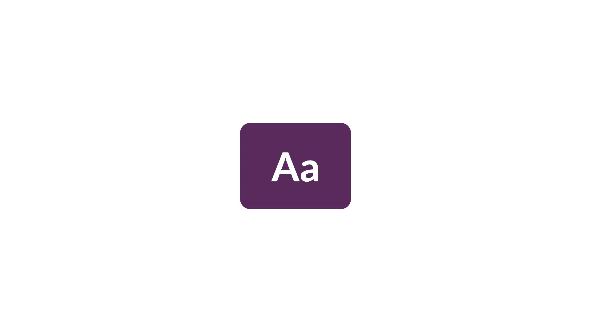
05Final product
One place to understand a case, update it, and pass it along.
01Feature 01
Survivor case dashboard
FLOW
The dashboard puts every case in one place, so an admin can tell status, priority, and case type apart without opening each one.
Sortable columns for name, status, priority, and case type let admins reorder the list
Color-coded priority and case type tags show urgency without opening a case
Export Cases to CSV replaces documentation OSE was putting together by hand for law enforcement
02Feature 02
Survivor case card
FLOW
Opening a case brings the important information into one view, so an admin or volunteer isn't piecing the story together from separate records.
Edit and per-case CSV export let admins update or document one case without leaving the view
Send Account Creation Email replaces the email admins were sending manually after escalating a case
Priority, status, and case type stay visible on the left, so context stays with the case
03Feature 03
Secure messaging
FLOW
Secure messaging gives survivors, volunteers, and admins one place to talk instead of personal email threads.
Color-coded typing profiles separate internal from external users
Blue for survivors, purple for volunteers, and red for admins
04Feature 04
Form builder
FLOW
The Form Builder lets OSE update forms like its intake questionnaire without needing a developer every time a question changes.
Multiple question types let admins pick the right input for each question
Preview and publish let them test a form before it reaches a survivor
05Feature 05
Mobile-first survivor intake
I designed the intake flow around mobile, since a phone may be the only device someone has when they need to fill it out.
Safety Exit stays fixed on every screen instead of moving between steps
The intro sets expectations up front: how long it takes, that skipping is fine, that it stays confidential
A progress bar and section counter show how much is left without anyone having to keep track
06Outcome & reflection
What we handed over, and what I took from it.
Delivered work
The flows I designed inside FLOW: the survivor case dashboard, the case card, secure messaging, the form builder, and the mobile-first intake.
OSE doesn't have developers on staff, so the form builder mattered as much as the screens did. It's how their team keeps forms up to date after handoff.
Reflection
Most of my earlier projects were about making a task faster. Here privacy and safety came before convenience, and that changed which options were even on the table.
A case moves between survivors, admins, and volunteers, so keeping its history attached to it was part of the design. Whoever picks it up next needs to know what already happened.
Sortable lists and CSV exports weren't the exciting parts, but they replaced work OSE was doing by hand. I pay more attention now to whether a feature actually takes work off someone's plate.
NABU publishes storybooks in children's native languages and reaches more than 12 million learners worldwide. I worked on part of the internal tool their team uses to manage partners and turn data from MySQL, spreadsheets, and Google Analytics into charts.
Admins needed one place to manage partners, organize that data, and turn it into visualizations.
01
Data was split between MySQL, spreadsheets, and Google Analytics, with no single place for admins to work with it.
02
When a new partner joined, admins set up dashboards by hand and collected data from country managers.
03
Doing that partner by partner took time and made it harder to keep anything consistent.
02Who we designed for
Leila MwangiNABU admin
Leila approves partners, manages their roles, and builds the visualizations NABU shares — across a few hundred records at a time.
What she needsOne place to approve partners, manage what each role can reach, and build visualizations, instead of switching between MySQL, spreadsheets, and Google Analytics and rebuilding a dashboard for every partner.
RoleNABU admin, partner side
Data sourcesMySQL, spreadsheets, Google Analytics
ScaleAround 200 partner roles
Where she came fromLeila stands in for the NABU admins the platform was built for. I don’t have interview notes from this project, so she represents the workflows we were given rather than a specific person I spoke to.
03Considerations
Most of the challenge was figuring out how the data should work.
Organizing the data first
Before designing the visualization flow, I spent time understanding how NABU's data was organized and how an admin would need to move through it.
Designing around tables
A lot of this product is tables rather than typical consumer UI, so I had to know which fields mattered to an admin before deciding how a row should be laid out.
Three months to production
We had one semester to design and ship, so we focused on the workflows NABU needed most instead of trying to solve everything.
04Design system
NABU's system came with the project. We added what the platform needed.
NABU gave us colors, typography, and branding guidelines, so I didn't build the system from scratch. What we added were the table, form, and button patterns the platform needed, which kept more of our time on the data and workflow problems.
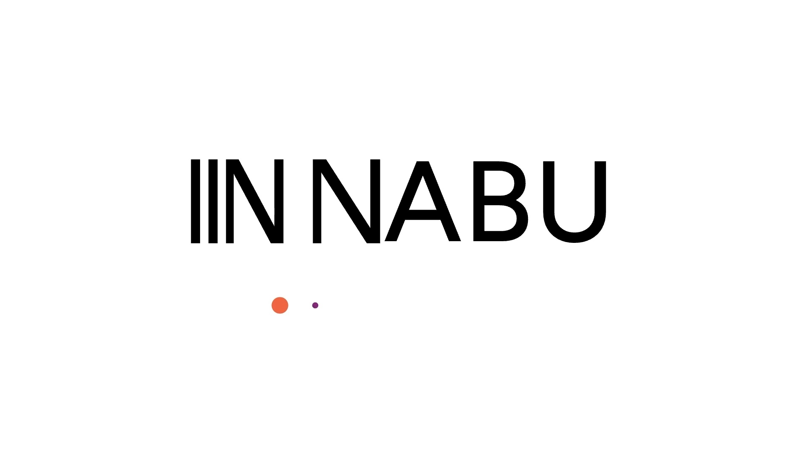
05Final product
A lot of this project came down to tables: how much to put in a row, and what happens when there are two hundred of them.
These are the three decisions I'd talk through first.
01Decision 01
Put the assigned visualizations inside the table row
NABU
A role decides which data a partner can see, so the table doesn’t help much if you can’t tell what each role gives access to. There are 200 roles, and the descriptions run long.
A dropdown inside the row expands the assigned visualizations, so several can be read without widening the table
Edit and delete sit at the end of each row, next to Create New Role above the table
Search and pagination bracket the table, since scanning all 200 was never realistic
Trade-offAn open dropdown covers the rows beneath it, so only one role can be expanded at a time. Comparing two roles side by side came up less often than checking one, so we kept it.
02Decision 02
Kept adding a partner in a modal instead of a separate page
NABU
Partner requests used to be handled one at a time in different places. Putting them in one table only helps if acting on one doesn’t send the admin off somewhere else.
The modal shows the roles that already exist, so nobody has to open another tab to look them up
Multi-select lets an admin approve or reject several requests at once
Search finds one requester in a longer list
03Decision 03
Made a role the single place access is decided
NABU
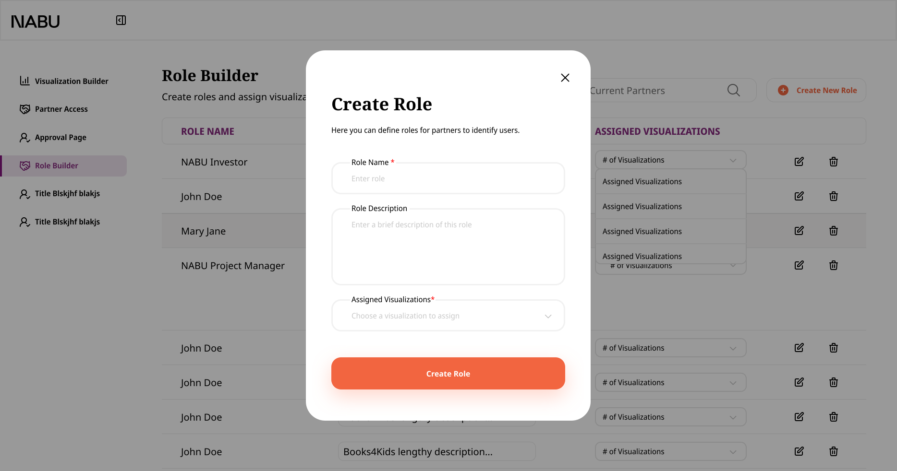
Creating a role means naming it, describing it, and picking the visualizations it can reach. That chain is the whole access model: the role decides the assigned visualizations, and those decide what a partner sees. It made sense to keep all of it in one form.
Creating, editing, and deleting all happen where the roles are listed
An admin can give a partner what they need without exposing the rest of the data
Workflow — visualization builder
Nobody has to rebuild a dashboard for every partner.
The final steps let admins narrow the data they need, then preview the visualization before publishing.
Step 4
Filters
This is where the admin picks the country, date range, and data they want the chart to cover.
01 Country and date range
02 Data section, pre-filled from the organized data
03 Progress markers for all five steps
NABU
Filters → Preview
NABU
Step 5
Preview
Before publishing, the admin sees the actual data behind the chart, so they can check the numbers instead of taking the chart's word for it.
01 The underlying data table
02 Back, to change a filter
03 Publish visualization
Publish
OutputFrom organized data to a chart NABU can send to a partner or funder.
NABU
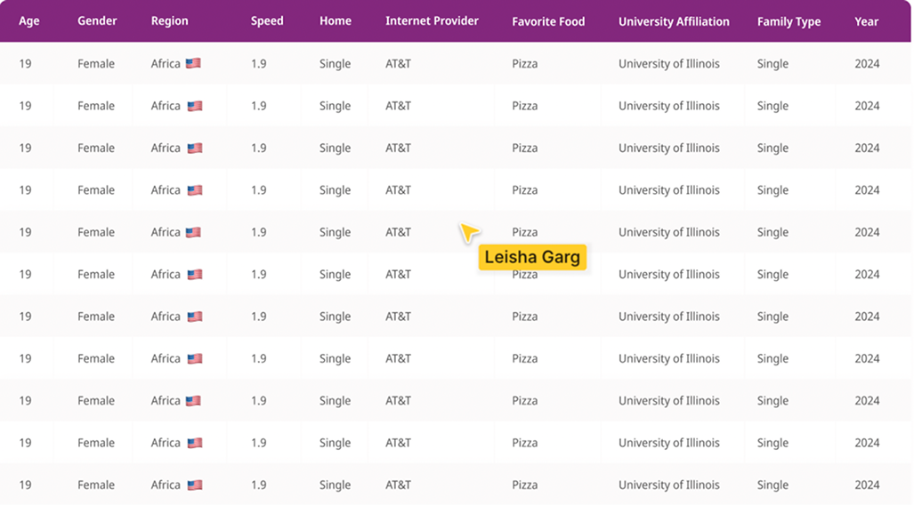
06Takeaways
Where it landed, and what it changed about how I design.
Where it landed
The part of the platform we designed put four jobs in one place: approving partners, managing roles and what each one can reach, organizing the data behind them, and building the visualizations NABU shares. I don't have usage data from after handoff, so I can't say how their week looks now.
What changed how I design
I couldn't organize the interface until I understood how the data itself was organized: what the fields meant and how an admin moved through them.
Working on an internal tool changed what I pay attention to. A search field and bulk actions aren't much to look at, but they take repetitive work out of something admins do every day.
I helped design a mobile habit tracker where parents can set goals for each of their kids and keep up with them at home. We worked with Brilliant Cities over three months to extend the support families get from their in-person programs.
SHORT ON TIME?
5 min read
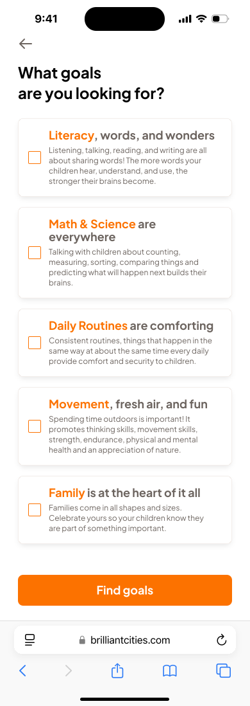
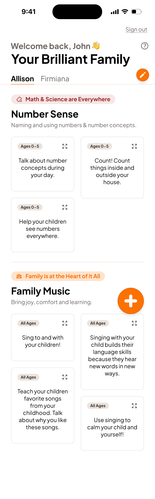
Timeline
Sept – Dec 2024
Role
Product Designer
Focus
Product Design
User Research
Design Systems
Team
2 designers
PM
Developers
Collaboration
Brilliant Cities
Child psychologist
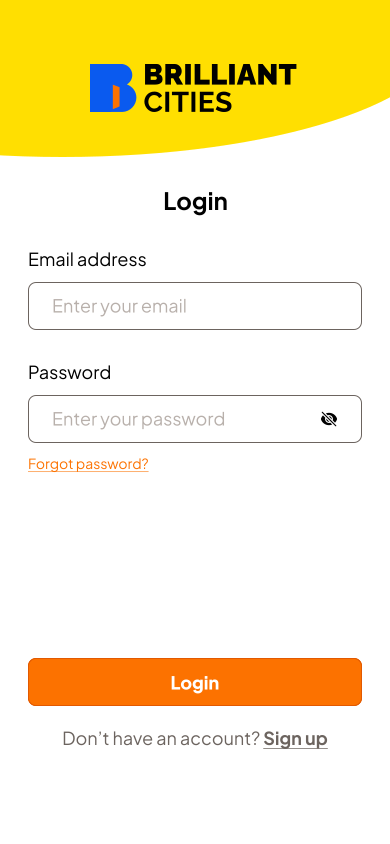
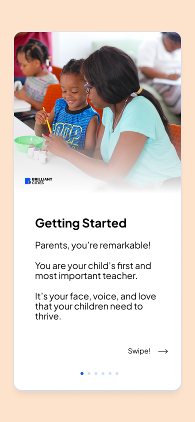
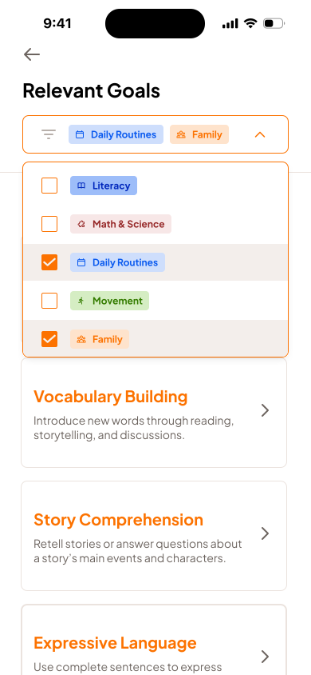
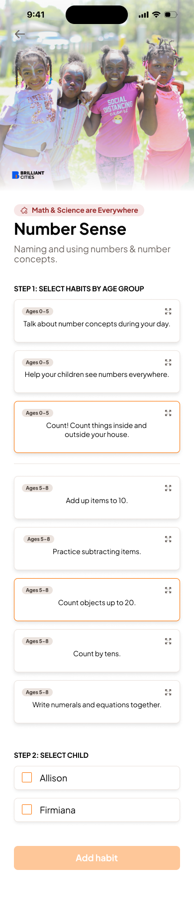
01Problem
Brilliant Cities mostly connects with families during in-person programs, so support tapered off once families went home.
01
What they run
In-person family programming
Brilliant Cities runs community dinners, fitness classes, computer lab hours, and other programs out of neighborhood hubs.
Dozens of program offerings
02
What happens after
Limited availability for follow-ups
Staff told us they typically check in with families about twice a year, leaving a long stretch with little visibility into how things are going at home.
Check-ins about twice a year
03
What that means for us
Different levels of tech comfort
Brilliant Cities told us families had different levels of comfort with technology, so we tried to make the main actions understandable without much onboarding.
Families vary a lot in tech comfort
Problem statement
Families didn’t have an easy way to keep building healthy habits after a program ended, and Brilliant Cities didn’t have a way to see how they were doing in between.
02Who we designed for
We designed for parents who want to help their kids but don’t have much free time.
Cynthia Grey
Single mom of two
“I want my kids to develop healthy habits, but I don’t have time to attend the programs.”
What she needs
Cynthia wants her kids to eat better and stay active, but she can’t always make it to Brilliant Cities’ programs. She’s looking for simple things she can do at home, and for a way to see whether they’re sticking.
Household
Two kids, ages 6 and 9
Schedule
Works full time
Program attendance
Rarely makes it in person
Where she came from
Cynthia came from conversations with a Brilliant Cities program manager who works directly with families. She shared common patterns around why parents come to programs, what makes attendance difficult, and what support they need at home. Cynthia combines those patterns rather than representing one person we interviewed.
03Constraints
A few things we had to design around.
Most of the decisions below come back to one of these.
01
Had to be clear on first use
Most of our users were adults who may not use apps often, so I kept screens simple and obvious.
02
Deliverables kept changing
Scope wasn’t clear at the start because of miscommunication inside Brilliant Cities, so I had to stay flexible.
03
Three months, start to finish
We had to design and get to production in one semester, so I had to work efficiently without cutting corners.
04
Wording reviewed by a child psychologist
Copy mattered as much as layout.
05
Mobile web, not an app
The client wanted a mobile website, since families would mostly reach it through their site on a phone.
04Design decisions
The five decisions I’d point to first.
The final product is a mobile web app where parents set habit goals for each child, get reminders to keep up with them, and stay connected to Brilliant Cities between programs.
Decision 01
Gave each goal category its own card instead of a plain list
Why
Brilliant Cities was specific about the categories they wanted, but the names alone didn’t tell a parent which habits were in each one. Cards let us show that.
Trade-off
Cards take up more room than a list on a phone. We added multi-select checkboxes so parents could pick a few categories at once instead of scrolling through all of them.
Decision 02
Used filter pills instead of a search bar
Why
We took inspiration from shopping site filters. Typing means remembering the exact category name, and the icons and colors on the pills let parents recognize categories instead.
Trade-off
Pills take up more space than a search bar. We thought that was worth it since parents don’t have to type or remember anything.
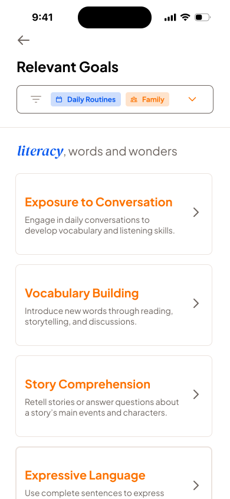
Decision 03
Grouped search results by category so parents could swipe through them
Why
Splitting habits up by category lets a parent see all the options in one area before moving on, which made the most sense for a mobile site.
Trade-off
Unlike a typical search, parents can only browse the options Brilliant Cities set. Someone used to typing a query has to scan instead.
Decision 04
Laid out the habit tips as steps, grouped by age
Why
We had wording the psychologist approved but no format for it. Steps help parents figure out the interface the first time, and grouping by age gets them to habits that fit their kid.
Trade-off
Grouping by age means a parent with kids in different age ranges has to look at more than one group.
Decision 05
Gave each child their own page, with a floating button to add more
Why
Parents can add as many habits as they want, so a page per child keeps each list from getting crowded. Grouping by goal also makes it easier to see progress in one area.
Trade-off
Switching between kids takes an extra tap, but each list stays short, which matters more on a phone.
05Design system
We built the design system before we designed screens.
Brilliant Cities gave us a branding kit — colors, fonts, and a few components like accordions — but not a full component library. I worked with another product designer to build the rest of what our screens needed: forms, tags, buttons, and more. Having it settled early meant our screens matched even though we were splitting them between us.
We collaborated on most of the components. The filter pill search was mine — I designed the pills and how they behave, and that pattern ended up carrying the whole search flow.
06Takeaways
What I took away from this project.
01
Working with another designer takes real communication
This was my first time designing alongside another designer. We spent a lot of time agreeing on what we were making, and learning how the other person works. That mattered as much as the screens.
02
Running a project end to end on a tight timeline
It was also my first time managing a project from start to finish with a real deadline. It pushed me to design faster and to be honest with myself about what actually mattered.
03
What I wanted to design wasn’t always what we could ship
I’d only done solo projects before this. Working with a PM, developers, and a child psychologist meant weighing what I wanted to design against what we could actually build in the semester.